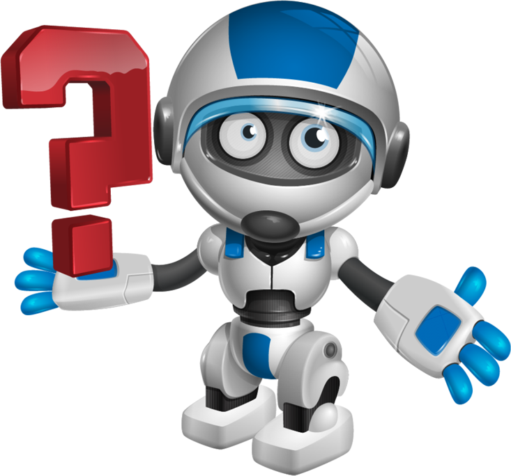

Kviz o robotima
Proširi svoje znanje o robotima

1. Riječ robot dolazi od slavenskog izraza "robota", što znači "služnost" ili "prisilni rad". Ali koje godine je termin prvi put upotrijebljen?
a. 1980
b. 1920
c. 1950
d. 1890
2. Neki se roboti koriste za rad u bunkerima nuklearne energije visokog zračenja. Čime su opremljeni ti roboti?
a. Laserima
b. Rukavicama protiv zračenja
c. Poseban metalni oklop
d. Nicim, sami po sebi su izdržljivi
3. Koliko ima zakona robotike?
a. pet
b. jedan
c. petsto
d. tri
4. Najživotniji robot je android čitač vijesti iz Japana. Koje je njegovo ime?
a. Kodomoroid
b. Newsbot
c. Laizy
d. Lažne vijesti, roboti nemaju imena
5. Čime se kontrolira Egzoskelete robote ?
a. Baterijama
b. Signalima mozga
c. Umjetnom inteligencijom
d. Unaprijed programirano računalo
6. Robo-stručnjaci imaju jednostavno rješenje ako njihove kreacije pokazuju znakove svijesnosti. Što je to?
a. Trčite niz stepenice
b. Primjene pravilo 2 robotike
c. Isključe ih
d. Predaja, to je neizbježno